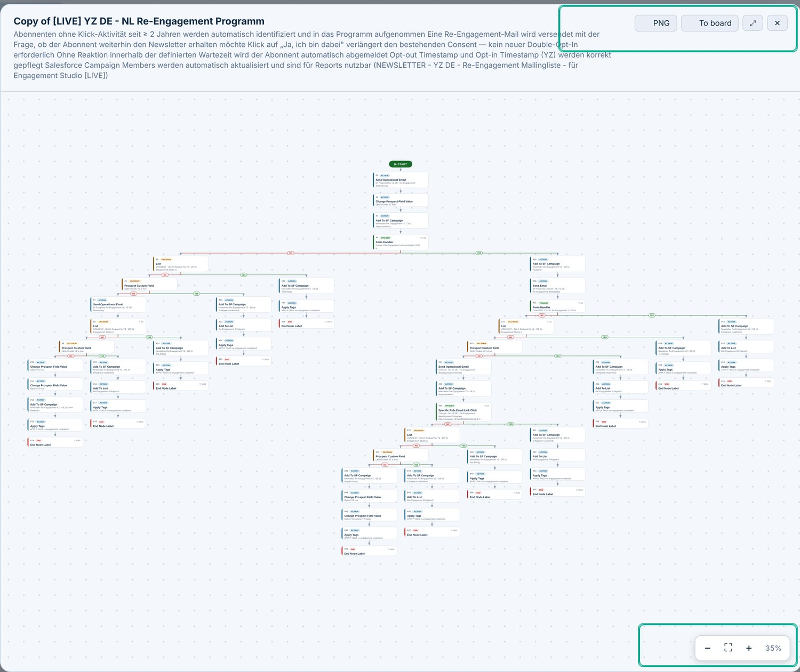
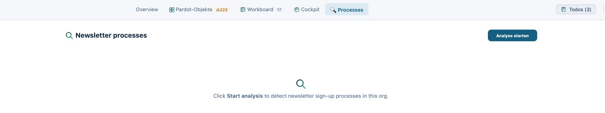
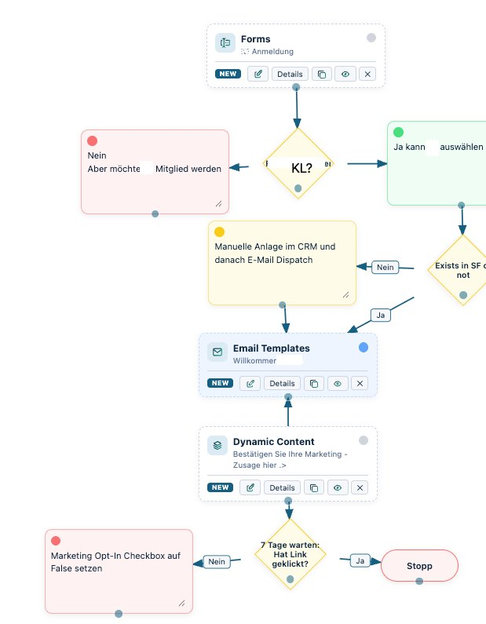

parAdots renders any Engagement Studio program — even a 65-step re-engagement flow — as one navigable diagram, with a plain-language summary of what it does. (Client names are masked as YZ.)

Each program gets a readable description built from its real steps, so a 65-step consent flow reads as a paragraph, not a puzzle.
Zoom from a single decision node out to the entire program and back. Nothing is too big to take in at a glance.
Export the full logic as a PNG for a slide deck, or push it straight to a shared workboard to review with the client.
parAdots works in two steps. First it analyses the org and detects existing newsletter sign-up, double-opt-in and re-engagement processes automatically. Then it builds each one — across forms, lists, automations and Engagement Studio — into a single, readable diagram you can verify and hand over.
Hand a client the process they already have — verified, in one picture.
01 · detect

02 · build
